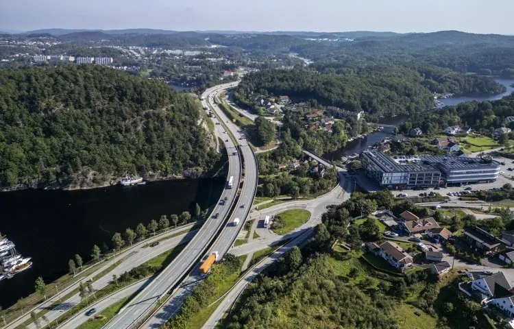

E18 Grimstad–Kristiansand
Norges største veiprosjekt.
E18 Kristiansand–Grimstad åpnet i august 2009. Den 38 kilometer lange firefelts motorveien var inntil nylig Norges største veiprosjekt noensinne.
38,3 kmFirefelt
61 bruerOg 8 tunneler
11Toplanskryss
90 %Færre ulykker
Veien
Fakta om E18
38,3 kilometer firefelts motorvei, 61 bruer, 8 tunneler og 11 toplanskryss.

Om Agder OPS
Vi driver veien
Agder OPS Vegselskap driver, vedlikeholder og utvikler veien – med ansvar for drift, beredskap og miljøoppfølging.
- Drift og vedlikehold.
- Beredskap i tunnelene.
- Miljø og ytre miljø.
38,3 kmFirefelt
61Bruer
8Tunneler
75 kmLokalveger
Spørsmål om veien?
Kontakt oss, så svarer vi.